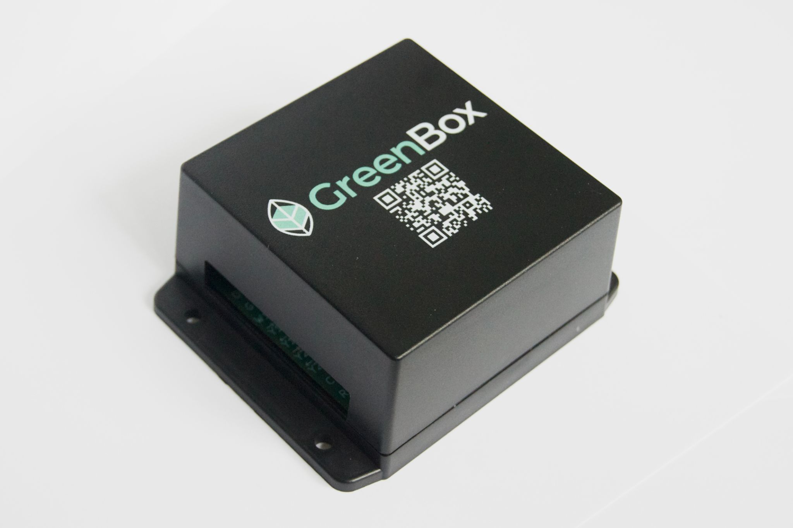
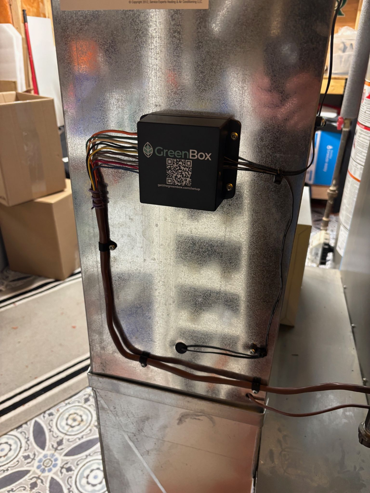

GreenBox
A product to reduce home heating costs and emissions without sacrificing comfort.
Overview
The GreenBox is a commercial HVAC controller designed to reduce costs and emissions for homes with two heating sources: a heat pump and a furnace. The device intelligently tracks system performance metrics, including heat pump coefficient of performance (COP) and furnace efficiency, and combines this data with cloud-connected dynamic real-time parameters such as grid emissions, electricity prices, and natural gas prices. Based on these parameters and the homeowner's preferences, the GreenBox ensures optimal heating at all times. The GreenBox is currently reducing costs and emissions for over 50 homes across Canada and the US.

Hardware
I designed and brought up more than five generations of the custom GreenBox control board. The system interfaces with standard 24VAC residential HVAC equipment, monitors thermostat and equipment signals, collects temperature data from several points throughout the HVAC system, and controls heat pump and furnace operation.

Key Features
- Real-time optimization between heat pump and furnace based on live electricity, gas, and grid-emissions data
- Continuous measurement of heat pump COP and furnace efficiency to inform switching decisions
- Compatible with any standard 24VAC thermostats and HVAC equipment
- Cloud-connected for remote monitoring, updates, and homeowner preferences